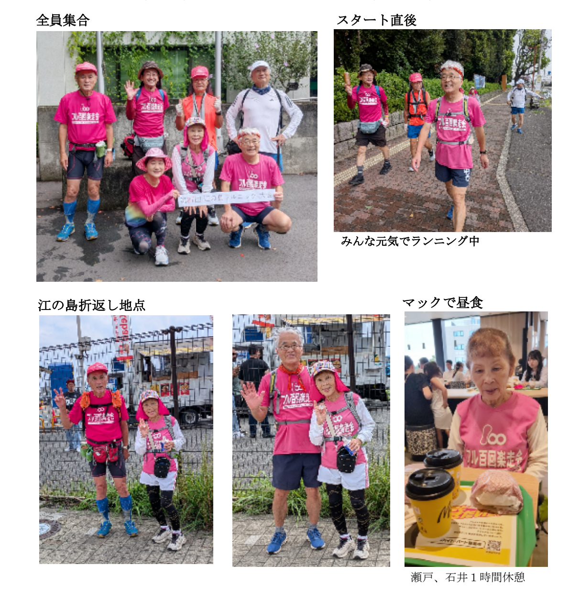

2026-08-23 04:56:05
2026年8月23日（日曜日）（場所 平塚総合公園⇔江の島、天候 曇り、気温 30℃）（担当）石井
| No | 地区会員番号 | 氏名 | 種目 | タイム | フル百 |
|---|---|---|---|---|---|
| 1 | 333 | 山口 義治 | フル | 9:35:32 | 827 |
| 2 | 340 | 島田 八十美 | フル | 9:35:32 | 830 |
| 3 | 403 | 飯田 和好 | フル | 9:35:32 | 881 |
| 4 | 229 | 瀬戸 君子 | フル | 11:34:14 | 749 |
| 5 | 317 | 石井 功 | フル | 11:34:14 | 817 |
| 6 | 42 | 榎本 博康 | フル | 12:35:50 | 223 |
| 7 | 227 | 松島 八十子 | 14km | 3:30:00 | 748 |
コメント 平塚総合公園7名でスタート
途中、松島さん辻堂駅入口で種目変更
江の島で山口さん飯田さん島田さんはビール付で食事、瀬戸さん石井は食堂が時間外のためマックで食事
榎本さんは腰と足痛い中、ビールとラーメンで労わりながらゴール
天候曇りで走りやすいフルニックでした
